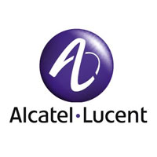

A propos de moi:
Bonjour je m'appelle Pierre BOURGER j'ai 18 ans actuellement étudiant dans l'IUT de Colmar dans le
département réseaux et télécommunication.
Je vis à Illkirch-graffenstaden une commune juste en dessous de Strasbourg, cependant dans le but de mes
études je dispose d'un appartement en plein centre de Colmar.
Vous allez découvrir sur ce site ma présentation au monde de l'internet connecté !

J'ai pu dans mon année de troisième participer à un stage, suivant le quotidien d'un employé de l'équipe de technicien de support informatique de l'entreprise Alcatel. C'est une expérience qui m’a beaucoup apporté car traitent de multiples sujets autour de l'informatique telle que: entretien de matériel réseaux, entretien de différents ordinateurs (portable ou fixe), entretien de matériels de téléconférence, entretien de l'environnement logiciel propre à l'entreprise etc...
Ce stage n’a pas cessé d'accroitre ma curiosité dans ce domaine, de ce faite il à été clé dans mon choix d'orientation dans ce BUT RT.
-BAC général (Lycée Couffignal, Strasbourg) avec les options Science de l'ingénieur, mathématiques et Numérique et science de l'informatique.
-Section Européenne (Anglais)
-Brevet des collèges (Collège Nelson Mendela, Illkirch)